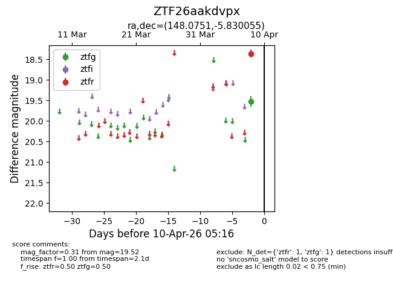
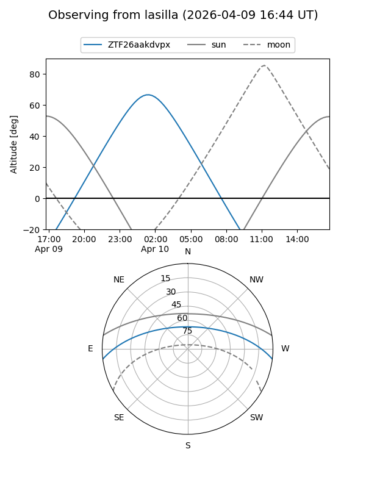
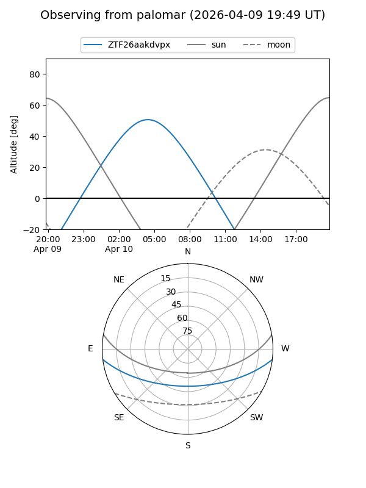

ZTF26aakdvpx
Target ZTF26aakdvpx at 2026-04-10 05:24
Aliases and brokers:
FINK: link
Lasair: link
ALeRCE: link
alt names
ZTF26aakdvpx (ztf,fink_ztf)
Coordinates:
equatorial (ra, dec) = 148.0751,-5.83005
equatorial (HMS+DMS) = 09:52:18.02,-05:49:48.20
galactic (l, b) = (243.4057,+35.59802)
Flags:
Photometry:
last ztfg=19.52, ztfr=18.36
1 ztfg, 1 ztfr detections
Lightcurve

Visibility


Additional plots